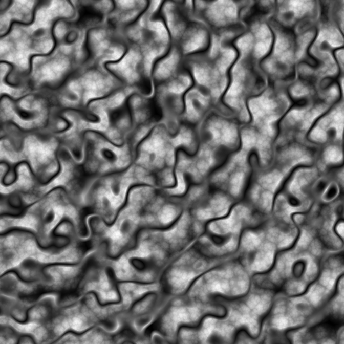

ambient is a an R package that provides access to the FastNoise C++ library for generating noise. As such it provides fast generation of perlin, value, cubic, and worley noise in 2 and 3 dimensions, as well as simplex and white noise in 2, 3, and 4 dimensions. Further, it provides pattern generators and other utilities that can be used for modifying and working with noise.
Most of the noise patterns can be generated as fractals as well with support for fbm, billow and rigid-multifractal, and can optionally be pertubed.
There’s not much more to it. If you are in need of a noise generator ambient is your friend, if not you probably shouldn’t care.
Installation
ambient can be installed from CRAN using install.packages('ambient'), or you may get the development version from github using devtools:
Examples
ambient provides a direct interface to the FastNoise functions by requesting a matrix/array of noise values, with a range of settings for pertubation and fractals:
library(ambient)
simplex <- noise_simplex(c(500, 500), pertubation = 'normal',
pertubation_amplitude = 40)
plot(as.raster(normalise(simplex)))
much more powerful, however, is the tidy interface that allows full control of how the values should be calculated and combined:
library(dplyr)
long_grid(x = seq(0, 10, length.out = 1000),
y = seq(0, 10, length.out = 1000)) %>%
mutate(
x1 = x + gen_simplex(x, y) / 2,
y1 = y + gen_simplex(x, y) / 2,
worley = gen_worley(x, y, value = 'distance', seed = 5),
worley_frac = fracture(gen_worley, ridged, octaves = 8, x = x, y = y,
value = 'distance', seed = 5),
full = blend(normalise(worley), normalise(worley_frac), gen_spheres(x1, y1))
) %>%
plot(full)
Code of Conduct
Please note that the ‘ambient’ project is released with a Contributor Code of Conduct. By contributing to this project, you agree to abide by its terms.